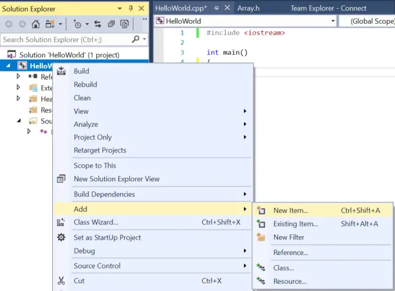
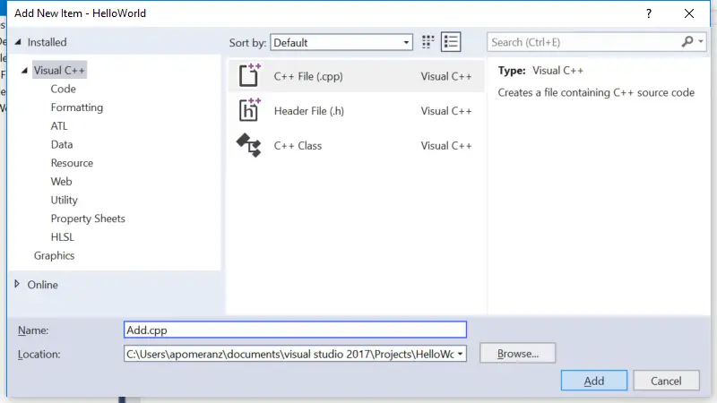
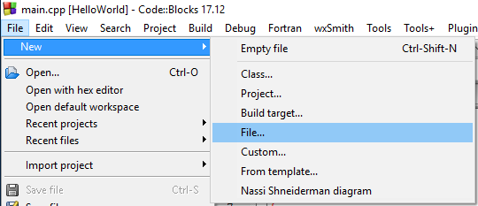
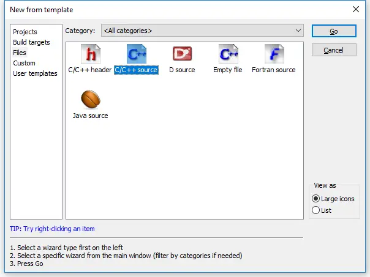
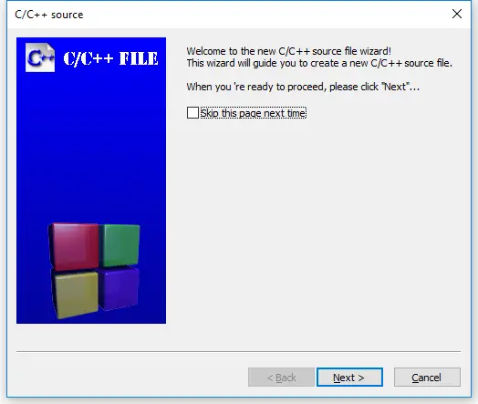
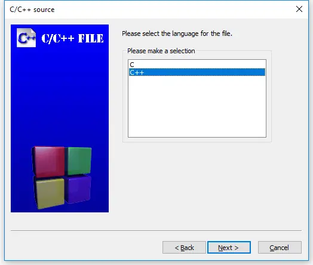
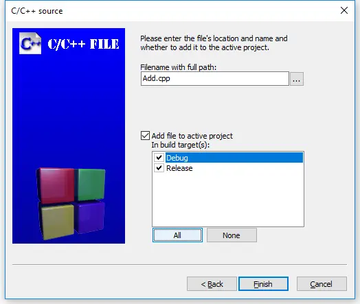

2.8 — Programmes composés de plusieurs fichiers de code
Ajouter des fichiers à votre projet
À mesure que les programmes grandissent, il est courant de les répartir entre plusieurs fichiers, pour des raisons d'organisation ou de réutilisation. L'un des avantages d'un environnement de développement intégré (IDE) est qu'il facilite grandement le travail avec plusieurs fichiers. Vous savez déjà créer et compiler un projet d'un seul fichier. Ajouter de nouveaux fichiers à un projet existant est très simple.
Bonne pratique
Lorsque vous ajoutez de nouveaux fichiers de code à votre projet, donnez-leur l'extension .cpp.
Pour les utilisateurs de Visual Studio
Dans Visual Studio, faites un clic droit sur le dossier Source Files (ou sur le nom du projet) dans la fenêtre Explorateur de solutions, puis choisissez Ajouter > Nouvel élément….

Assurez-vous que Fichier C++ (.cpp) est sélectionné. Donnez un nom au nouveau fichier, et il sera ajouté à votre projet.
Remarque : Votre Visual Studio peut afficher une vue compacte au lieu de la vue complète montrée ci-dessus. Vous pouvez utiliser la vue compacte, ou cliquer sur « Afficher tous les modèles » pour accéder à la vue complète.

Remarque : Si vous créez un nouveau fichier depuis le menu Fichier au lieu de le faire depuis votre projet dans l'Explorateur de solutions, le nouveau fichier ne sera pas ajouté automatiquement à votre projet. Vous devrez l'ajouter manuellement. Pour cela, faites un clic droit sur Source Files dans l'Explorateur de solutions, choisissez Ajouter > Élément existant, puis sélectionnez votre fichier.
Désormais, lorsque vous compilez votre programme, vous devriez voir le compilateur afficher le nom de votre fichier pendant sa compilation.
Pour les utilisateurs de Code::Blocks
Dans Code::Blocks, allez dans le menu Fichier et choisissez Nouveau > Fichier….

Dans la boîte de dialogue New from template, sélectionnez C/C++ source et cliquez sur Go.

Il se peut que vous voyiez ou non une boîte de dialogue welcome to the C/C++ source file wizard à ce stade. Si c'est le cas, cliquez sur Next.

Sur la page suivante de l'assistant, sélectionnez « C++ » et cliquez sur Next.

Donnez maintenant un nom au nouveau fichier (n'oubliez pas l'extension .cpp), puis cliquez sur le bouton All pour vous assurer que toutes les cibles de compilation sont sélectionnées. Enfin, sélectionnez Finish.

Désormais, lorsque vous compilez votre programme, vous devriez voir le compilateur afficher le nom de votre fichier pendant sa compilation.
Pour les utilisateurs de gcc
En ligne de commande, vous pouvez créer vous-même le fichier supplémentaire avec l'éditeur de votre choix, et lui donner un nom. Lors de la compilation de votre programme, vous devrez inclure tous les fichiers de code concernés dans la ligne de commande. Par exemple : g++ main.cpp add.cpp -o main, où main.cpp et add.cpp sont les noms de vos fichiers de code, et main est le nom du fichier de sortie.
Pour les utilisateurs de VS Code
Pour créer un nouveau fichier, choisissez Affichage > Explorateur dans la barre de navigation supérieure pour ouvrir le panneau Explorateur, puis cliquez sur l'icône Nouveau fichier à droite du nom du projet. Vous pouvez aussi choisir Fichier > Nouveau fichier dans la barre de navigation supérieure. Donnez ensuite un nom à votre nouveau fichier (n'oubliez pas l'extension .cpp). Si le fichier apparaît dans le dossier .vscode, faites-le glisser d'un niveau vers le haut, dans le dossier du projet.
Ouvrez ensuite le fichier tasks.json et repérez la ligne "${file}",.
Vous avez deux options :
- Si vous souhaitez indiquer explicitement les fichiers à compiler, remplacez
"${file}",par le nom de chaque fichier à compiler, un par ligne, comme ceci :
"main.cpp",
"add.cpp",
- Le lecteur « geo » signale que vous pouvez faire compiler automatiquement par VS Code tous les fichiers .cpp du répertoire, en remplaçant
"${file}",par"${fileDirname}\\**.cpp"(sous Windows). - Le lecteur « Orb » signale que
"${fileDirname}/**.cpp"fonctionne sous Unix.
Un exemple sur plusieurs fichiers
Dans la leçon 2.7 -- Déclarations anticipées et définitions, nous avons examiné un programme d'un seul fichier qui ne se compilait pas :
#include <iostream>
int main()
{
std::cout << "The sum of 3 and 4 is: " << add(3, 4) << '\n';
return 0;
}
int add(int x, int y)
{
return x + y;
}
Lorsque le compilateur atteint l'appel de fonction à add à la ligne 5 de main, il ne sait pas ce qu'est add, puisque nous ne définissons add qu'à la ligne 9 ! Notre solution consistait soit à réordonner les fonctions (en plaçant add en premier), soit à utiliser une déclaration anticipée pour add.
Examinons maintenant un programme similaire réparti sur plusieurs fichiers :
add.cpp :
int add(int x, int y)
{
return x + y;
}
main.cpp :
#include <iostream>
int main()
{
std::cout << "The sum of 3 and 4 is: " << add(3, 4) << '\n'; // compile error
return 0;
}
Votre compilateur peut compiler add.cpp ou main.cpp en premier. Dans les deux cas, main.cpp ne se compilera pas et affichera la même erreur de compilation que dans l'exemple précédent :
main.cpp(5) : error C3861: 'add': identifier not found
La raison est exactement la même : lorsque le compilateur atteint la ligne 5 de main.cpp, il ne sait pas ce qu'est l'identifiant add.
N'oubliez pas que le compilateur compile chaque fichier individuellement. Il ne connaît pas le contenu des autres fichiers de code et ne garde aucune trace de ce qu'il a vu dans les fichiers de code compilés précédemment. Ainsi, même si le compilateur a pu voir la définition de la fonction add auparavant (s'il a compilé add.cpp en premier), il ne s'en souvient pas.
Cette visibilité limitée et cette mémoire courte sont intentionnelles, pour plusieurs raisons :
- Elles permettent de compiler les fichiers source d'un projet dans n'importe quel ordre.
- Lorsque nous modifions un fichier source, seul ce fichier doit être recompilé.
- Elles réduisent le risque de conflits de noms entre identifiants situés dans des fichiers différents.
Nous verrons ce qui se passe lorsque des noms entrent en conflit dans la prochaine leçon (2.9 -- Collisions de noms et introduction aux espaces de noms).
Nos options de solution sont les mêmes que précédemment : placer la définition de la fonction add avant la fonction main, ou satisfaire le compilateur à l'aide d'une déclaration anticipée. Ici, comme la fonction add se trouve dans un autre fichier, le réordonnancement n'est pas possible.
La solution consiste donc à utiliser une déclaration anticipée :
main.cpp (avec déclaration anticipée) :
#include <iostream>
int add(int x, int y); // needed so main.cpp knows that add() is a function defined elsewhere
int main()
{
std::cout << "The sum of 3 and 4 is: " << add(3, 4) << '\n';
return 0;
}
add.cpp (inchangé) :
int add(int x, int y)
{
return x + y;
}
Désormais, lorsque le compilateur compile main.cpp, il connaît l'identifiant add et est satisfait. L'éditeur de liens (linker) reliera l'appel de fonction à add dans main.cpp à la définition de la fonction add dans add.cpp.
Grâce à cette méthode, nous pouvons donner accès à des fichiers aux fonctions définies dans un autre fichier.
Essayez de compiler add.cpp et main.cpp avec la déclaration anticipée par vous-même. Si vous obtenez une erreur de l'éditeur de liens, assurez-vous d'avoir correctement ajouté add.cpp à votre projet ou à la ligne de compilation.
Remarque
Comme le compilateur compile chaque fichier de code individuellement (puis oublie ce qu'il a vu), chaque fichier de code qui utilise std::cout ou std::cin doit faire un #include <iostream>.
Dans l'exemple ci-dessus, si add.cpp avait utilisé std::cout ou std::cin, il aurait dû faire un #include <iostream>.
Point clé
Lorsqu'un identifiant est utilisé dans une expression, il doit être relié à sa définition.
- Si le compilateur n'a vu, dans le fichier en cours de compilation, ni déclaration anticipée ni définition de l'identifiant, il signalera une erreur à l'endroit où l'identifiant est utilisé.
- Sinon, si une définition existe dans le même fichier, le compilateur reliera l'utilisation de l'identifiant à sa définition.
- Sinon, si une définition existe dans un autre fichier (et est visible pour l'éditeur de liens), l'éditeur de liens reliera l'utilisation de l'identifiant à sa définition.
- Sinon, l'éditeur de liens signalera une erreur indiquant qu'il n'a pas pu trouver de définition pour l'identifiant.
Quelque chose s'est mal passé !
Bien des choses peuvent mal tourner la première fois que vous travaillez avec plusieurs fichiers. Si vous avez essayé l'exemple ci-dessus et rencontré une erreur, vérifiez les points suivants :
- Si vous obtenez une erreur de compilation indiquant que add n'est pas défini dans main, vous avez probablement oublié la déclaration anticipée de la fonction add dans main.cpp.
- Si vous obtenez une erreur de l'éditeur de liens indiquant que add n'est pas défini, par exemple :
unresolved external symbol "int __cdecl add(int,int)" (?add@@YAHHH@Z) referenced in function _main
2a. …la raison la plus probable est que add.cpp n'a pas été correctement ajouté à votre projet. Lors de la compilation, vous devriez voir le compilateur lister à la fois main.cpp et add.cpp. Si vous ne voyez que main.cpp, alors add.cpp n'est certainement pas compilé. Si vous utilisez Visual Studio ou Code::Blocks, vous devriez voir add.cpp listé dans l'Explorateur de solutions ou le panneau de projet, à gauche ou à droite de l'IDE. Si ce n'est pas le cas, faites un clic droit sur votre projet, ajoutez le fichier, puis relancez la compilation. Si vous compilez en ligne de commande, n'oubliez pas d'inclure à la fois main.cpp et add.cpp dans votre commande de compilation.
2b. …il est possible que vous ayez ajouté add.cpp au mauvais projet.
2c. …il est possible que le fichier soit configuré pour ne pas être compilé ni relié. Vérifiez les propriétés du fichier et assurez-vous qu'il est configuré pour être compilé et relié. Dans Code::Blocks, la compilation et l'édition de liens sont deux cases à cocher distinctes qui doivent être cochées. Dans Visual Studio, il existe une option « Exclure du build » qui doit être réglée sur « Non » ou laissée vide. Vérifiez chaque configuration de build (par exemple debug et release) séparément.
- N'écrivez pas #include “add.cpp” dans main.cpp. Bien que cela fonctionne dans ce cas, inclure des fichiers .cpp avec #include augmente le risque de conflits de noms et d'autres conséquences imprévues (surtout à mesure que les programmes grandissent et se complexifient). Nous reviendrons sur #include dans la leçon 2.10 -- Introduction au préprocesseur.
Résumé
C++ est conçu de sorte que chaque fichier source puisse être compilé indépendamment, sans connaissance de ce qui se trouve dans les autres fichiers. Par conséquent, l'ordre dans lequel les fichiers sont effectivement compilés ne devrait pas avoir d'importance.
Nous commencerons à travailler beaucoup avec plusieurs fichiers lorsque nous aborderons la programmation orientée objet. C'est donc le moment idéal pour vous assurer que vous savez ajouter des fichiers et compiler des projets multifichiers.
Rappel : chaque fois que vous créez un nouveau fichier de code (.cpp), vous devez l'ajouter à votre projet pour qu'il soit compilé.
Temps de quiz
Question n° 1
Répartissez le programme suivant en deux fichiers (main.cpp et input.cpp). main.cpp doit contenir la fonction main, et input.cpp doit contenir la fonction getInteger.
Indice
Indice : n'oubliez pas que vous aurez besoin d'une déclaration anticipée de la fonction getInteger() dans main.cpp.
#include <iostream>
int getInteger()
{
std::cout << "Enter an integer: ";
int x{};
std::cin >> x;
return x;
}
int main()
{
int x{ getInteger() };
int y{ getInteger() };
std::cout << x << " + " << y << " is " << x + y << '\n';
return 0;
}
Solution
input.cpp :
#include <iostream> // we need iostream since we use it in this file
int getInteger()
{
std::cout << "Enter an integer: ";
int x{};
std::cin >> x;
return x;
}
main.cpp :
#include <iostream> // we need iostream here too since we use it in this file as well
int getInteger(); // forward declaration for function getInteger
int main()
{
int x{ getInteger() };
int y{ getInteger() };
std::cout << x << " + " << y << " is " << x + y << '\n';
return 0;
}
Si l'éditeur de liens signale une référence indéfinie à getInteger(), c'est probablement que vous avez oublié de compiler input.cpp.
Source originale : https://www.learncpp.com/cpp-tutorial/programs-with-multiple-code-files/